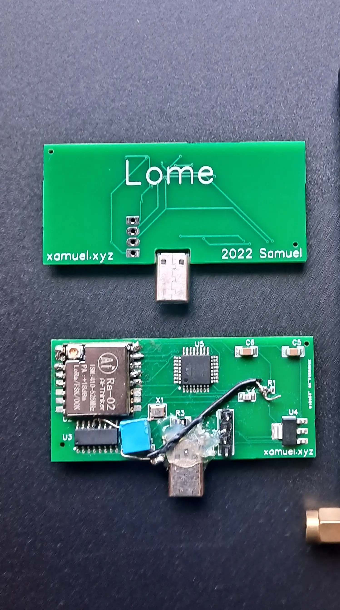

Lome
Lome es un dispositivo que se puede conectar a tu teléfono inteligente mediante USB-C y mandar paquetes LoRa. Está basado en el atmega-8a y el módulo Ra-02.
Puede recibir y enviar mensajes y gracias a que esta basado en el ATMEGA-8a puede ser programado con el IDE Arduino.
Puede ser útil en una situación en la que no hay señal para comunicarte con tus amigos o compañeros.
